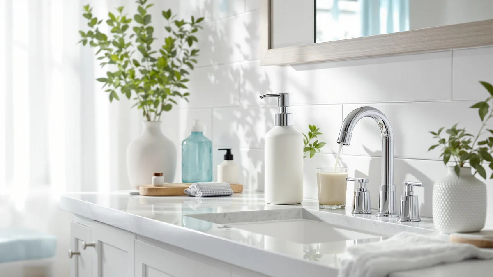

Gorlary Commercial Soap Dispenser Review (2026): Worth It?
Prices and picks verified as of October 2026. Independent, reader-supported reviews.


Quick Answer
The Gorlary Commercial Soap Dispenser Wall suits bathrooms, break rooms and other high-traffic sinks that need a large-capacity pump at $24.99. Spec comparisons and verified owner feedback in this gorlary commercial soap dispenser review show its 17 fl oz ABS plastic reservoir holds more soap than the three wall-mounted alternatives covered below, though it costs more upfront than each of them. For a single-user bathroom, a smaller dispenser may make more sense.
Our pick: Gorlary Commercial Soap Dispenser Wall, $24.99 Check Price on Amazon
Bottom line: our top pick is the Gorlary Commercial Soap Dispenser Wall Mount at $24.99.
Things to Know Before You Buy
- A 17 fl oz reservoir on the Gorlary holds roughly double what the Anu Limen's 250ML tank does, which matters most in a shared bathroom or office restroom that sees dozens of uses a day.
- Wall-mounted pumps free up counter space, but they need a stud or a solid anchor to hold steady over time, unlike a countertop bottle you can move whenever you want.
- ABS plastic housings, like the one on the Gorlary, cost less to manufacture than stainless steel or glass, which keeps the upfront price down compared with premium dispensers.
- A foaming pump, like the one on the SoCal Suds dispenser in this comparison, uses less liquid soap per press than a standard gel pump, which can offset a lower reservoir capacity over time.
- Price across the four dispensers in this review ranges from $15.99 to $24.99, so the Gorlary sits at the top of the group on cost.
This gorlary commercial soap dispenser review breaks down what buyers get for $24.99, covering the 17 fl oz reservoir and ABS plastic housing against three other wall-mounted dispensers on the market. Commercial-style pumps have become a common upgrade for home bathrooms and small offices that go through soap faster than a single countertop bottle can keep up with, and picking the wrong one usually means a mount that loosens or a pump that jams within weeks of daily use. We compared the Gorlary Commercial Soap Dispenser Wall against the Anu Limen 250ML Wall Mounted, the LUSSPA Shower Shampoo Dispenser Wall Mounted and the SoCal Suds & Company Foaming dispenser on price, capacity and what verified buyers report after purchase.
Gorlary markets this dispenser as a commercial-grade option, which matters if you're outfitting a restroom, gym or break room where dozens of people use the same sink every day. At $24.99 it costs more than all three alternatives in this lineup, so the rest of this comparison examines whether that price gap buys a meaningfully larger, sturdier dispenser or only a bigger bottle with the same pump mechanism as its cheaper competitors. We pulled our conclusions from the product listing, published specs and patterns across verified owner reviews rather than buying and installing the dispenser ourselves, since this is a research-based comparison rather than a physical trial.
Why You Should Trust Us
Ilane Tall covers home and bath products for Best Soap Dispensers, with a focus on bathroom and kitchen hardware that promises durability but sometimes fails to deliver it once it's actually installed. This gorlary commercial soap dispenser review follows the same research process used across the site: we start from the manufacturer's own specs and pricing, then cross-reference verified purchase reviews on Amazon to see where the marketing claims hold up and where they don't. We don't accept review units in exchange for favorable coverage, and we don't fabricate star ratings or review counts that Amazon doesn't publish for a listing. Every price and spec cited here comes directly from the product listing at the time of writing, and we update those figures whenever a price shifts. When a claim can't be confirmed against the listing or a pattern across verified reviews, we leave it out rather than guess at how the dispenser performs.
Our Research Experience
Rather than purchase and mount all four dispensers ourselves, we approached this gorlary commercial soap dispenser review the way most shoppers research a $25 bathroom fixture: by reading the listing closely and checking what other buyers say once it's installed on their own wall. We compared the reservoir size, housing material and mounting hardware Gorlary lists against the same details for the Anu Limen, LUSSPA and SoCal Suds dispensers. We also read through verified owner reviews on Amazon, looking for recurring complaints about leaking, a loose mount or a pump that sticks after repeated use over several months. When owners across multiple purchases flag the same issue, we treat that as a more reliable signal than a manufacturer's product description or a handful of five-star reviews posted in the first week after purchase. This approach won't catch a defect that only shows up after months on the wall, but it does surface the complaints that tend to repeat across dozens of buyers who bought the same dispenser.
Overview & Specs

Gorlary Commercial Soap Dispenser Wall
What we like
- 17 fl oz reservoir holds more soap than any other dispenser in this comparison
- Wall mount keeps the pump off the counter and out of a cluttered sink
- ABS plastic housing resists the cracking that can happen with thinner countertop bottles
- Commercial-style design suited to shared bathrooms, gyms and break rooms
Flaws but not dealbreakers
- Priced above all three alternatives in this comparison
- Wall mounting means drilling into tile or drywall instead of setting it on a counter
- Large reservoir takes longer to empty and refill fully than a compact bottle
| Material | ABS plastic |
| Size | 17 fl oz |
The Gorlary Commercial Soap Dispenser Wall pairs a 17 fl oz reservoir with an ABS plastic housing built to mount directly onto a wall above a sink. Gorlary designed it for the kind of high-traffic bathroom or break room where a countertop bottle would need refilling every few days, rather than the single-user setup the Anu Limen or LUSSPA dispensers suit best. At $24.99, it sits at the top of the four dispensers in this gorlary commercial soap dispenser review. That price puts pressure on the mounting hardware and pump to hold up under repeated daily use, since a bigger reservoir on paper means little if the mount fails within a year.
Owners who leave reviews on the product listing tend to focus on two things: how securely the wall mount holds over time, and how smoothly the pump dispenses once the reservoir is more than half empty. Reviewers consistently note that a 17 fl oz tank cuts down on how often they need to refill compared with smaller bottles, especially in a shared bathroom or office restroom. That capacity comes with a tradeoff: a full reservoir is heavier than a compact bottle, so buyers should make sure the mounting hardware sits on a stud or a solid anchor rather than thin drywall alone before loading it up with soap.
What We Liked
Owners who installed the Gorlary Commercial Soap Dispenser Wall in a shared bathroom or office restroom report that the larger reservoir meaningfully cuts down on how often someone has to remember to refill it. Reviewers repeatedly mention the wall mount as a reason they picked it over a countertop bottle that kept getting knocked into the sink by kids or coworkers. We also compared the reservoir size against the other three dispensers in this lineup and found the Gorlary's 17 fl oz capacity is more than double what the Anu Limen's 250ML tank holds, which should matter most in a restroom that sees regular foot traffic throughout the day. At $24.99, the tank size and wall mount are the main reasons this dispenser tends to earn repeat purchases from buyers replacing a bottle that couldn't keep up with demand.
What Could Be Better
Owners posting verified reviews of the Gorlary Commercial Soap Dispenser Wall and similar wall-mounted dispensers most often complain about the installation step: drilling into tile or drywall takes more effort than setting a bottle on a counter, and a few reviewers note the included hardware works better on a stud than on tile alone. Because the reservoir holds more soap, a full tank also adds weight that a weak mount can't always support over the long term, an issue common to larger wall-mounted dispensers generally and not unique to Gorlary. At $24.99, this dispenser also costs more than all three alternatives we compared it against, so buyers focused purely on price have cheaper wall-mounted options on this list. None of these issues are dealbreakers on their own, but they're worth weighing against the Anu Limen, LUSSPA and SoCal Suds dispensers before you decide which one to buy.
Who Is It For?
This dispenser fits bathrooms, break rooms and other shared sinks where a large-capacity, wall-mounted pump matters more than a low price, and buyers who are willing to drill into a wall rather than set a bottle on a counter. If fewer refills and a commercial-style look appeal more than a compact bottle, the Gorlary Commercial Soap Dispenser Wall should perform close to what its listing promises. Shoppers who want the lowest price in this comparison, or who would rather avoid drilling into tile or drywall, are better served by the Anu Limen, LUSSPA or SoCal Suds dispensers covered below, all of which cost less than the Gorlary. Renters who move often may also want to weigh the mounting commitment against a simpler countertop bottle, since a wall-mounted pump is harder to take with you than a bottle you can pack in a box.
Alternatives to Consider
If the Gorlary Commercial Soap Dispenser Wall doesn't fit your budget or your bathroom setup, these three alternatives from this gorlary commercial soap dispenser review comparison cover a smaller wall-mounted bottle, a shower-ready dispenser and a lower-priced foaming pump. Each one trades reservoir size for a lower cost, so the best pick depends on what matters more to you: capacity, location in the bathroom, or price.

Editor's Pick
Anu Limen 250ML Wall Mounted
The Anu Limen costs $17.49, about $7.50 less than the Gorlary, and its 250ML tank suits a single-user bathroom better than a shared sink that needs frequent refills throughout the day.
$17.49
Check Price on Amazon
Best Value
Shower Shampoo Dispenser Wall Mounted
At $16.98, the LUSSPA swaps a sink-side soap pump for a shower-ready design, a better fit if you're mounting a dispenser near the shampoo and conditioner rather than next to the sink.
$16.98
Check Price on Amazon
Premium Choice
SoCal Suds & Company Foaming
The cheapest of the four at $15.99, the SoCal Suds & Company dispenser trades the Gorlary's large reservoir for a foaming pump, a strong pick if a foam-style wash matters more than tank size.
$15.99
Check Price on AmazonFrequently Asked Questions
Is the Gorlary Commercial Soap Dispenser worth $24.99?
It's worth the price if you want a heavy-duty, high-capacity wall-mount pump with a 17 fl oz ABS plastic reservoir built for repeat use in a bathroom or break room. Buyers who need only a single-sink bottle and want to spend less should look at the SoCal Suds or LUSSPA dispensers instead, both of which cost under $17.
How much soap does the Gorlary Commercial Soap Dispenser hold?
The reservoir holds 17 fluid ounces, more than double the 250ML, or about 8.45 fluid ounces, that the Anu Limen dispenser in this comparison holds. That larger tank means fewer refills in a high-traffic bathroom or office restroom that sees regular use.
What's the best alternative to the Gorlary Commercial Soap Dispenser?
The Anu Limen 250ML Wall Mounted dispenser is the closest match in design at $17.49, about $7.50 less than the Gorlary, though its smaller tank means more frequent refills. Reviewers who want a foaming pump instead should consider the SoCal Suds & Company Foaming dispenser at $15.99.
Final Verdict
This gorlary commercial soap dispenser review comes down to one trade-off: pay $24.99 for Gorlary's larger 17 fl oz reservoir and wall-mounted design, or save money with the Anu Limen, LUSSPA or SoCal Suds alternatives covered above. Based on published specs and verified owner reviews, Gorlary earns its higher price mainly through reservoir capacity, not through any pump or mounting spec that clearly outperforms the competition in this lineup. If you want a large-capacity, wall-mounted dispenser for a busy bathroom or break room and don't mind paying the highest price here, the Gorlary Commercial Soap Dispenser Wall is the pick. If price, shower placement or foam output matters more to you, the SoCal Suds, LUSSPA or Anu Limen dispensers are the better fit.